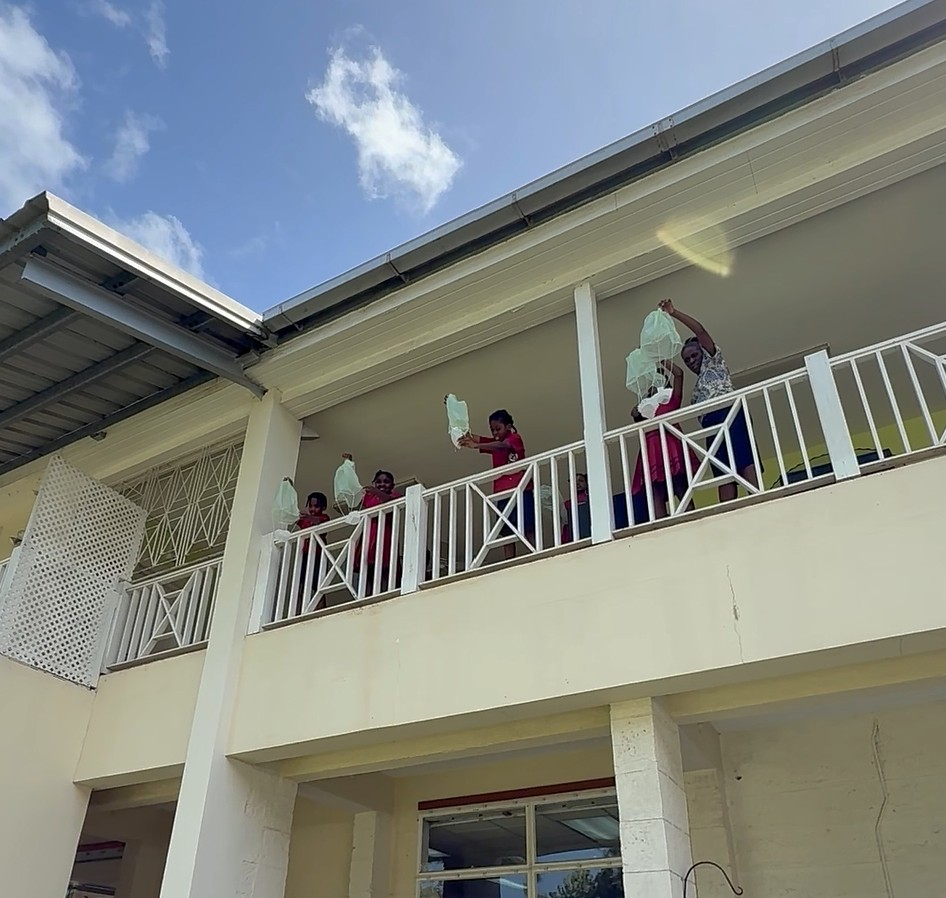
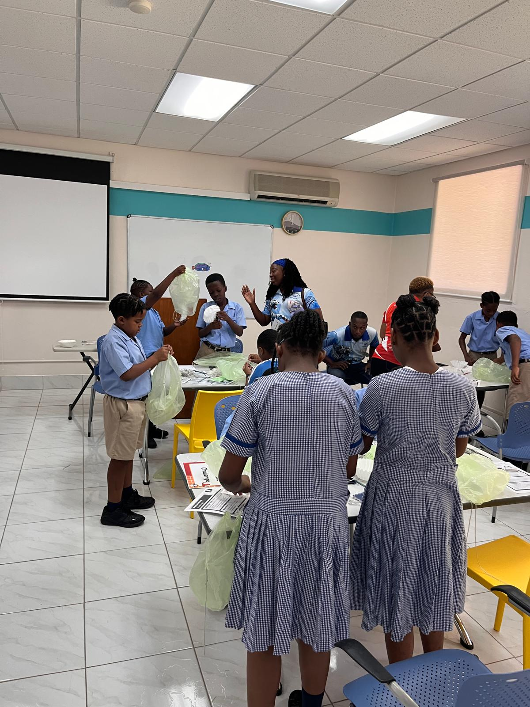
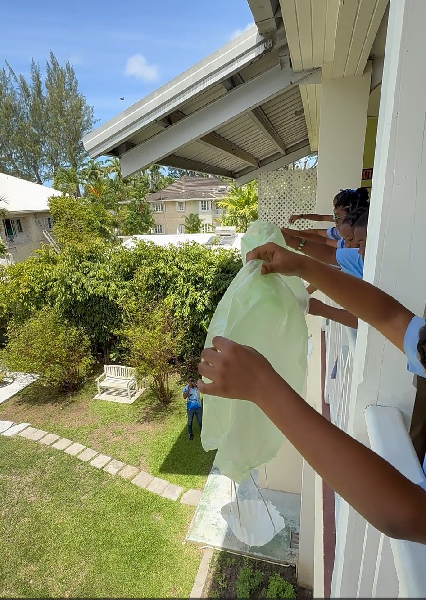
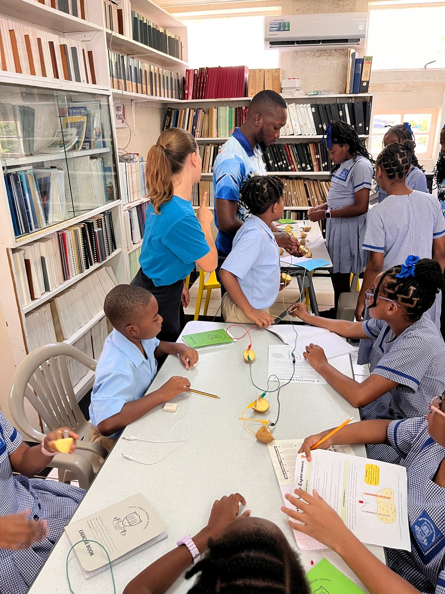
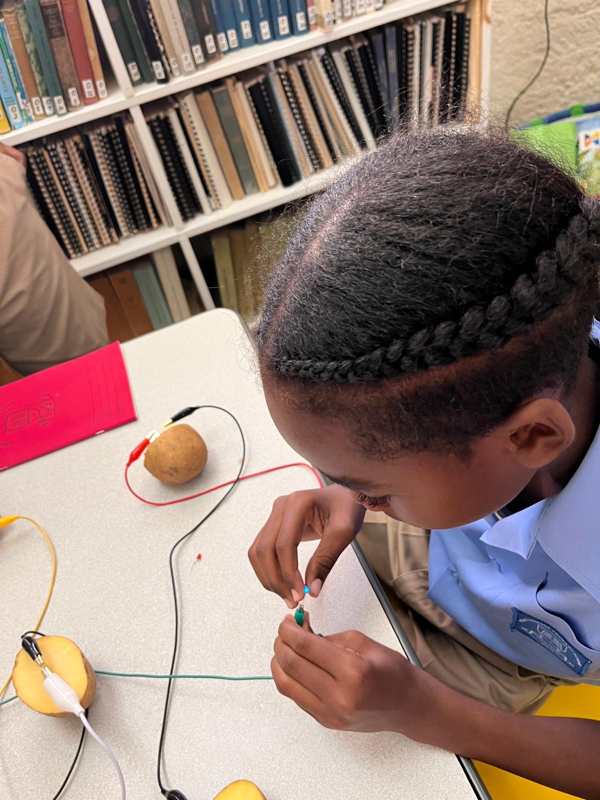
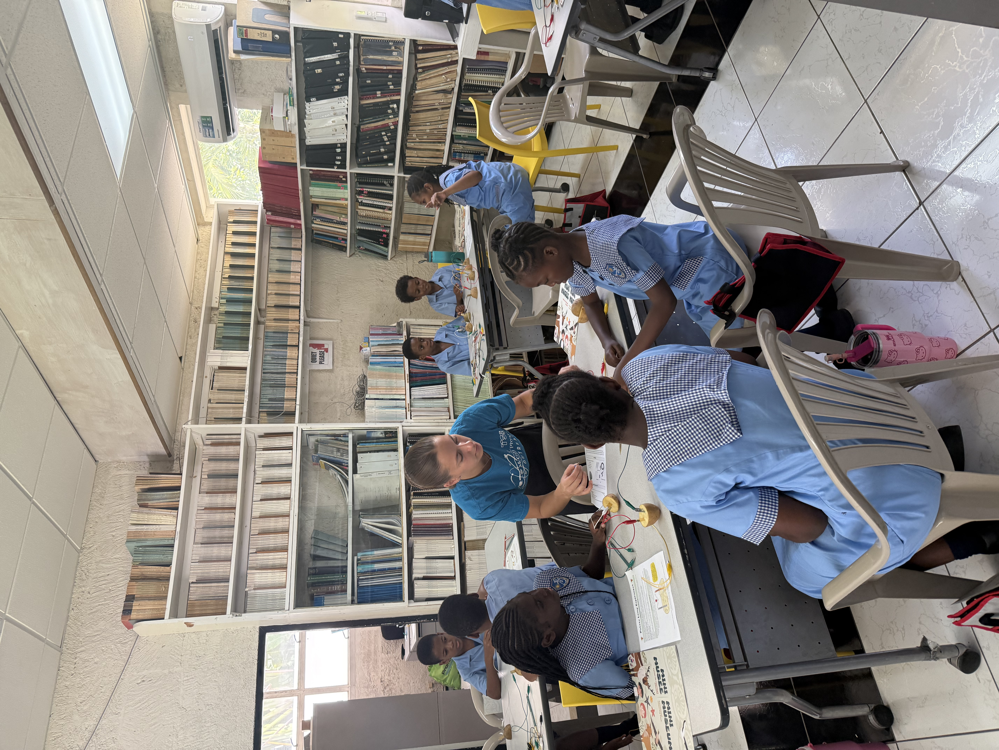
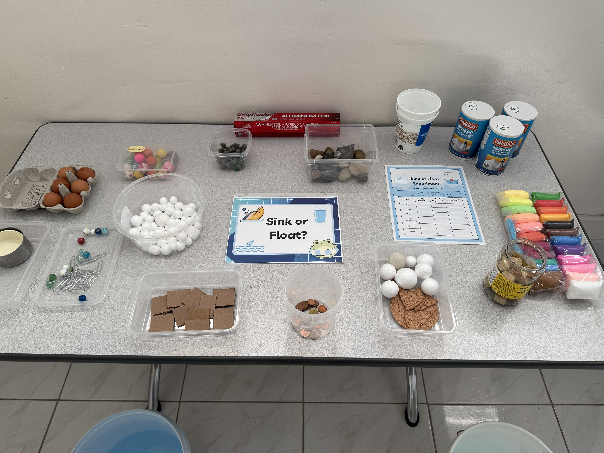
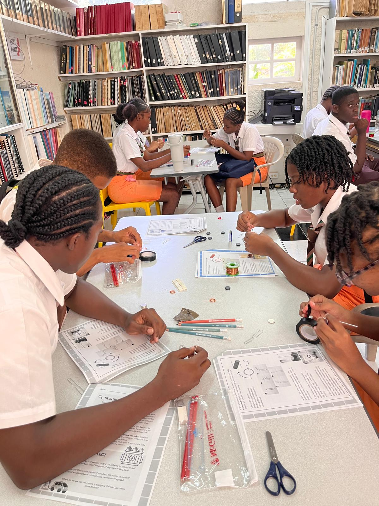
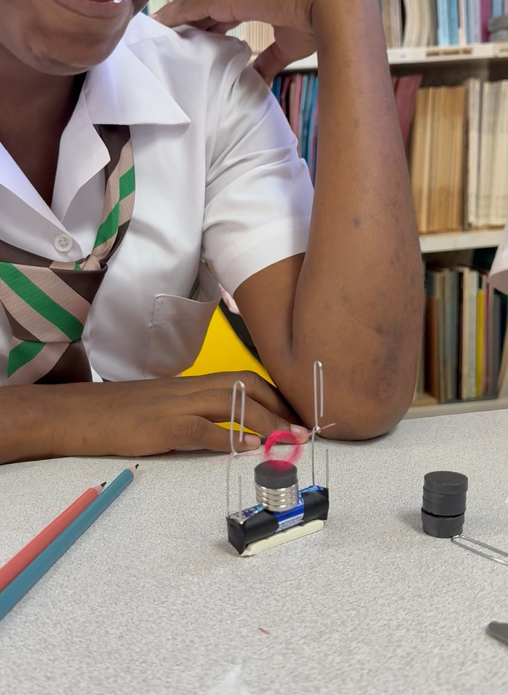
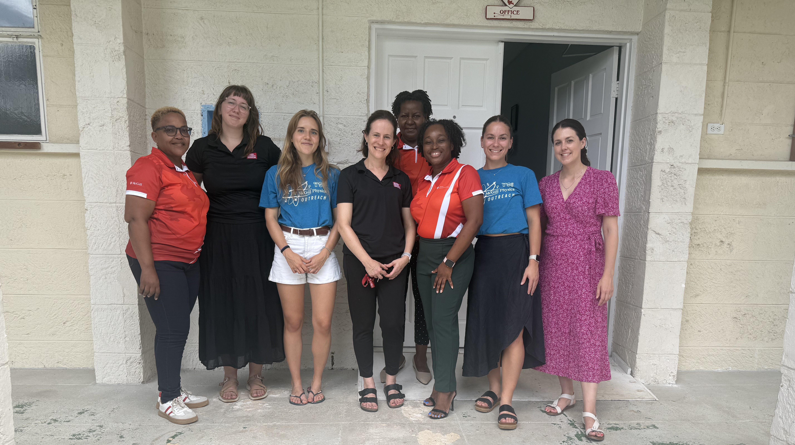

This past September, St. James Parish in Barbados celebrated We Gatherin’, a year-long festival of Barbadian heritage, culture, and community. As part of the festivities, McGill’s Bellairs Research Institute hosted a day-long Science Adventure for local schoolchildren featuring a visit from McGill’s Redpath Museum and the Physics Outreach Committee.
Physics Master’s student Valentina Mazzotti and Physics PhD candidate Catherine Boisvert represented Physics Outreach, with Educational Program Manager Annick Brabant and Educational Consultant Megan Phillips representing the Redpath Museum. A total of 120 students from St. James Parish schools, aged 10 to 14, participated in the event, which marked the first time that both the Redpath Museum and Physics Outreach had ever organized a workshop abroad.
Catherine and Valentina led hands-on physics activities that brought together local middle and high school students for an introduction to physics through simple, engaging hands-on demos and experiments.
In the morning, the activities were designed for younger students, who explored physical concepts such as air resistance, buoyancy, and basic electrochemistry through hands-on demos using simple materials.
In the Parachute Challenge, students worked in small teams to design and build miniature parachutes using everyday materials such as paper, string, plastic bags, and tape. The goal was to safely land a small object (in our case, marbles) from a set height while maximizing air resistance and minimizing the impact speed of their parachute. The session was highly hands-on: students experimented with different canopy shapes and sizes, observed the effects, and iteratively improved their designs.



The potato lamp experiment introduced students to the concept of an electrochemical cell. By inserting two dissimilar metals (zinc and copper) into a potato, students created a simple galvanic cell where a redox reaction generates a small electric current. When connected to a light-emitting diode (LED), the circuit showed how chemical energy stored in the potato could be converted into electrical energy. The students had a lot of fun experimenting with their homemade battery and saw first-hand how connecting more potatoes in series increases the total voltage in the circuit, making the LED appear brighter.



Students who completed the Parachute Challenge could then participate in the Sink or Float Activity, where they tested various everyday objects in water to predict and verify whether each would sink or float. Using a worksheet, they recorded their predictions and observations to compare outcomes. By testing clay, they also had the chance to see how shape plays a critical role in boat design, as it directly affects buoyancy. Lastly, they tested a raw egg in both fresh and salt water to observe how the density of water influences its floating behavior (they observed first-hand how a raw egg will sink in fresh water but float in salt water, because as the salt content increases, the water becomes denser!).

In the afternoon, the focus shifted to electromagnetism and magnetism, with activities aimed at high-school students. The students had the opportunity to build a simple electric motor using a coil of copper wire, a magnet, and a battery. As current flowed through the coil, they observed how the interaction between the magnetic field and moving charges produced a torque, causing the coil to spin. This was a fun demo that allowed students to learn how electrical energy can be converted into mechanical motion and introduced the idea of an electromagnet, as well as being an activity that required a lot of troubleshooting and precision.


Students also revisited the potato lamp experiment, connecting several cells in series and measuring the resulting voltage with a multimeter, which allowed them to observe first hand how the electrical potential increases with the number of cells, a core idea in basic circuit design.
The final experiment involved building a magnetic compass, an activity that introduced students to the concept of magnetism and the Earth's magnetic field. Using plastic bottle caps, cork disks, and sewing needles, students created working compasses by magnetizing the needles and floating them on water using small pieces of cork or wax paper. After rubbing one end of the needle with a strong magnet in a single direction, students observed how the needle aligned itself along the north–south axis. They could then test their homemade compasses by comparing them with the compasses on their phones — which led to big surprises! Students also experimented with a large horseshoe magnet to see how bringing it close to their homemade compass disrupted and influenced the needle’s orientation.
Overall, the activities encouraged students to observe, test, and discuss what they saw — connecting simple materials to physical principles. For the McGill team, it was an opportunity to share the process of discovery that lies at the heart of physics and to show how experimentation can reveal the rules that govern the natural world.
For both Valentina and Catherine, the outreach visit to Bellairs was a memorable experience. “Seeing the students' excitement and curiosity as they engaged with the experiments was incredibly rewarding, as it reminded them of the joy of discovery that science can bring, especially when it’s hands-on and interactive.”
